Common name : Agallocha, blinding tree
Common name in Tamil : Tilai, kampetti
Common name in Telugu : Tilla, tella, chilla
Common name in Singhalese : Thelakiriya, thela
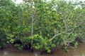
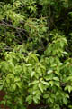
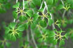
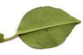
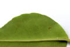
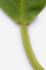
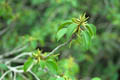
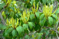
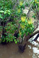
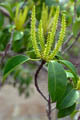
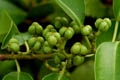
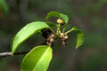
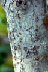
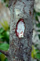
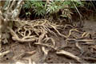
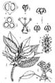
Diagnostic characters
Botany & morphology
Regeneration
Reproductive biology
Ecology
Distribution
Uses
A dioecious tree to 15m high with abundant white latex; bark grayish, lenticellate. Leaves alternate, spirally arranged. Flowers unisexual. Fruits globose, 3-lobed.
Leaves alternate, ovate-elliptic or orbicular, apex shortly acuminate, base narrowed, margin entire or sinuate-crenate, 3 - 8 x 1.5 - 3 cm, glabrous, petiolate,
Flowers unisexual. Male flowers in catkin spikes, fragrant, yellow, 2 – 3 mm across; stamens 3, filaments free.
Female flowers in axillary raceme, pale green, 2.5 - 3.5 mm across, pedicellate; calyx 3 – lobed; ovary 3-celled, trifid style.
Fruits capsule, globose 3-lobed, seeds sub-globose.
Lateral roots spreading and intermingled with each other, supraterranean bands produce elbow-shaped pegs instead of pneumatophores.
Epigeal or modified epigeal germination.
Flowers are pollinated by insects.
An evergreen tree common along the higher estuarine banks, canals, creeks, tidal forests and mangrove swamps.
India, Sri Lanka, Burma, tropical South East Asia, North Australia and New Caledonia Southern Japan, Pacific Islands.
Timber used as firewood, converted charcoal and in carpentry. Sap and wood are used as purgative. Often used as fish poison.
Top of the page